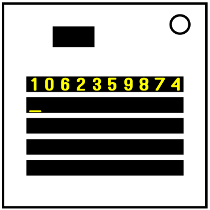

On the Subject of MWISort
When we create technology that can destroy the universe, we can achieve everything in the world... Until we destroy all universes.
There are 5 long displays on the module, numbered from 0 to 4 from top to bottom. Display #0 contains 10 non-repeating digits. The module will be solved if on the last display all the recorded digits are sorted. Press any digit to write it to the place where the cursor is now (symbol "_"). If more than 10 seconds have passed since the last entry, you will receive a strike. This rule does not apply if a strike has occured during that time. If after entering the last digit the last display is not sorted, you will receive a strike. If an invalid digit is pressed, you will receive a strike. All digit positions are numbered from 0 to 9 from left to right.
There is also a black button at the top of the module. If you get a strike, you can press it to reset the module.
A digit cannot be located under an equal digit. But there are exceptions described below, these digits must be located under equal digits.
- Display #1: the digit located at the position equal to the least significant digit of the number of starting minutes.
- Display #2: the digit equal to the least significant digit of the number of modules.
- Display #3: the digit located at the position equal to the least significant digit of the number of batteries.
- Display #4: (optional) the digit located at the position equal to the least significant digit of the number of batteries.
SCP-████ - MWISort
Item #: SCP-████
Object Class: Safe
Special Containment Procedures: SCP-████ poses no immediate risk in any direct sense. Even so, its unique functions require that special measures be taken to restrict access and manipulation of the object. SCP-████ must be stored on four (4) peripherals located in different secret areas. It is forbidden to upload SCP-████ or its source code to the Internet or copy it to other peripherals or media without the written permission of at least two (2) Level 4 staff members. Since the source code of SCP-████ is only partially reviewed, the computers on which SCP-████ is installed must not be connected to a phone line or network.
Description: SCP-████ is a modification for the video game "Keep Talking and Nobody Explodes". In this game, players need to defuse a bomb, on which a number of modules are located. Each module represents a certain logical task that needs to be solved by acting according to the instructions written for the module. If SCP-████ has been located on a bomb, the player will be incapable of losing in any way.
Neither the creator, nor the uploader, of SCP-████ has yet been located. Efforts are still ongoing.
The source code is in the process of being reviewed, but it is not yet clear why the anomalous effect is observed. When the game starts, the module receives a set of numbers over an unspecified channel. This happens even if the device running the game is not connected to the network. The module is considered solved if the player sorts this set of numbers. Numerous experiments with an attempt to deliberately not pass this module still led to its solution for various reasons, up to the appearance of SCP-███ and the solution of the module by it. Judging by the small number of code snippets that have been reviewed, it can be assumed that SCP-████ is a sorting machine that destroys the universe if the answer is incorrect or there is no answer due to the expiration of the bomb timer. Assuming that the many-worlds interpretation is true, playing
this module will result in the existence of exactly one surviving universe where the answer is successfully sorted. The credibility of this theory is also evidenced by the name of the module, which contains the abbreviation MWI (many-worlds interpretation).
Addendum ████-1: Historical reference
- 10-01-████ - SCP-████ has been uploaded to Steam Workshop.
- ██-██-████ - Foundation has received information about the unusual properties of SCP-████.
- 12-██-2020 - The module has been removed from Steam Workshop. A virus was launched into the Internet, which deleted all references to SCP-████.
- ██-██-2021 - Memetic was launched in the official discord channel of the game, which removed information about this module from the players' memory. The memetic was hidden in the "#ktane-discussion" chat in one of the images of the daily "Module of the Day" announcements.
- 06-20-2021 - A Foundation programmer recreated SCP-████ without its anomalous properties and uploaded it to the Steam Workshop. Also, the module has been slightly modified: instead of a large set of numbers, the module gives shuffled digits from 0 to 9 at the input. This was done due to the fact that, without the anomalous properties inherent in SCP-████, this module was very difficult to solve.